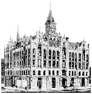

History of Odd Fellowship
WHY THE NAME ODD
FELLOWS?
There are several different reasons
given for our strange name. One old and apparently
authoritative history of Odd Fellowship gives the
explanation, "That common laboring men should associate
themselves together and form a fraternity for social
unity and fellowship and for mutual help was such a
marked violation of the trends of the times (England in
the 1700's) that they became known as 'peculiar' or
'odd,' and hence they were derided as 'Odd Fellows.'
Because of the appropriateness of the name, those
engaged in forming these unions accepted it. When
legally incorporated the title 'Odd Fellows' was
adopted."
Another, similar explanation is that
the original Odd Fellows were men who were engaged in
various or odd trades, as there were organizations for
some of the larger trades.
Modern references state that the true
reason for the name Odd Fellows isn't known or
documented. Whatever the reason may have been, the
unusual name has been the object of public curiosity
(and on occasion derision or mirth) for well over 200
years.
THE BEGINNING OF ODD
FELLOWSHIP
Although some books claim to trace Odd
Fellowship back to Roman times when members of the Roman
Legions in England were called "Fellow Citizens", what
is said to be the earliest printed record of an Odd
Fellows Lodge appears in a reference to a lodge meeting
at a Globe Tavern in England, in 1748. This lodge was
numbered nine, so apparently there were at least nine
associated Odd Fellows lodges at that time.
Other evidence suggests that our
origins were in an organization known as the Ancient
Order of Bucks which thrived in England in the 18th
Century, and had as its emblem three bucks with their
antlers intertwined. These men had as their leader a
"Most Noble Grand" and met in club rooms and taverns.
One of their principal emblems was "a bundle of sticks,"
familiar to modern Odd Fellows as signifying strength in
union. They dropped "Bucks" from the name in 1802.
Whatever the origin, solid evidence begins to be found
in the late 18th Century. By 1796 Odd Fellow
organizations were numerous in England, and each was
independent from the others. Fraternal groups such as
the Odd Fellows were suppressed in England for a time,
but by 1803 the Odd Fellows were revived by an
organization called "London Union Odd Fellows," which
later became known as the "Grand Lodge of England" and
assumed authority over all Odd Fellow lodges in that
country.
Victory Lodge in Manchester declared
itself independent of the Grand Lodge of England in
1809. In 1814, the six Odd Fellows lodges in the
Manchester area met and formed The Manchester Unity of
the Independent Order of Odd Fellows, which elected
officers and proceeded to standardize degree work of the
lodges.
ODD FELLOWSHIP IN NORTH
AMERICA
Among the first records of the Order
in America is that of five Brothers of the English Order
who met in New York City in 1806, and formed Shakespeare
Lodge No. 1.
The founders were three boat builders,
a comedian and a vocalist - a group befitting the name
"Odd Fellows," indeed. The lodge was self instituted, a
common practice in those times. Their first candidate
was a retired actor who was the keeper of the tavern
where they met. Accounts state that lodge meetings were
accompanied by merry making and mirth, and that the
wares of the tavern were freely indulged in. This lodge
was dissolved in 1813 due to poor attendance brought on
by controversy over the War of 1812.
Another lodge of which little is known
existed briefly in New York in 1816. In 1818,
Shakespeare Lodge in New York was re-instituted, in the
Red Cow tavern, operated by a former member who had in
his keeping the books and papers of the former lodge.
They claimed to have received a charter from the
Manchester Unity which gave them authority over all
other Odd Fellows Lodges in the United States, but this
authority was not accepted by other lodges. Several more
lodges were founded in the New York City area, and one
in Philadelphia, due to the efforts of the Brothers of
Shakespeare Lodge.
The
Independent Order of Odd Fellows as we know it today
began in Baltimore, Maryland, where five members of the
Order from England founded Washington Lodge No. 1 on
April 26,1819, by self-institution. One of these
Brothers was
Thomas Wildey, the first Noble Grand and the man
revered as the founder of Odd Fellowship in North
America. A charter was received from Duke of York Lodge
in Preston, England, in 1820, a year and a half after
its self-institution.
A second lodge was formed in Baltimore
in 1819, but these two lodges and those in New York were
unaware of each others' existence for some time,
communications being slow in those days, and there being
no reason such information would travel from one city to
another except by pure chance.
In 1821, the "Grand Lodge of Maryland
and of the United States of America, of the Independent
Order of Odd Fellows," was founded. Brother Wildey also
served as the first Grand Master/Grand Sire of the first
Grand Lodge, for a period of 12 years. Several more
lodges were established, and in 1824, the "Grand Lodge
of the United States" now termed "The Sovereign Grand
Lodge," was separated from the Grand Lodge of Maryland.
The Independent Order of Odd Fellows in North America
(United States and Canada) became independent from the
Order in England in 1834.
ODD FELLOWSHIP EXPANDS WEST
There were several abortive attempts
to establish Odd Fellowship in the Western United
States, beginning in the late 1840's.
One of the first occurred when a
member, leading a party sailing from Gloucester,
Massachusetts, to what he called "the City of Oregon, on
the Columbia River," obtained a charter through what
was, at best, irregular channels. He had written to both
the Grand Sire and the Grand Secretary of the Grand
Lodge of the United States, after which he alleged that
they had directed him to obtain necessary papers and
authority from a Deputy Grand Sire in Massachusetts.
Asked by the Deputy Grand Sire to see the letters, the
Brother in question stated they had been packed by
mistake, and were now on the ship, about to sail for
Oregon.
However, the ship and its party of Odd
Fellows reached not the "City of Oregon," but the
Sandwich Islands, and established the first Odd Fellows
Lodge west of the Mississippi River, Excelsior Lodge No.
1, in Honolulu, Hawaii, with the charter signed by King
Kamehameha, the reigning monarch of the Sandwich Islands
which were later renamed the Hawaiian Islands.
ODD FELLOWSHIP IN CALIFORNIA
The good works of Odd Fellowship were
in evidence in California prior to the official
establishment of the fraternity here. The official
establishment of Odd Fellowship in California had its
birth in the City of Philadelphia, Pennsylvania, where a
short time prior to January 12, 1849, the Most Worthy
Grand Sire, Horn R. Kneass, issued a charter entitled
"California Lodge No. l."
Due to the excitement of the discovery
of gold at Coloma, in January, 1848, the Port of Yerba
Buena (San Francisco) was in a turmoil throughout 1849.
Two of the three petitioners left for the gold fields in
the "Mother Lode," to seek their fortunes. Everything
pertaining to Odd Fellowship was left with James Smiley.
He made one or two attempts, within the next three
months to organize an Odd Fellows lodge, but with so
many leaving for the gold fields, the idea was
abandoned.
When some of the brothers returned
from the gold fields, he was able to gather a sufficient
number of former brothers to assist in making up the
complement of charter members, required by the laws
under which they secured the charter. On September 9,
1849, one year to the day before California was admitted
to the Union as the 31st State, California Lodge No. 1
came into being, in the City of San Francisco, with
Brother Smiley instituting the lodge.

SAN FRANCISCO ODD
FELLOWS TEMPLE: The Odd Fellows Temple, located on the
corner of Seventh and Market Streets in San Francisco,
was one of the showpieces in the city. The structure was
destroyed during the 1906 earthquake, the Odd Fellows
rebuilt on the same site with a comparable building. For
many years the Grand Lodge office was located in the San
Francisco Odd Fellows Temple.
Several months previous to the
organization of California Lodge No. 1 the brothers of
San Francisco were at work relieving the suffering, and
during a few months they expended over $100,000. It was
not unusual during this period, and for a number of
years, to cost a member $5.00 or even $10.00 to attend a
meeting, for there was no regular means of collecting
dues, or paying benefits, and the calls for aid were
many.
An interesting feature of California
Lodge No. 1 during their formation period was their dues
structure. They adopted their first By Laws November 25,
1850, and the initiation fee was set at $50.00; dues,
$10.00 per quarter in advance; and no benefits were to
be paid a Brother who was able to pay his own expenses.
Two years later San Francisco Lodge No. 3 was
established.
In Sacramento an association was
organized by a Texas Odd Fellow, A. M. Winn, later the
founder of the Native Sons of the Golden West. The
brother published a notice in the "Pacific News" calling
all Odd Fellows together. More than 100 three linkers
assembled on August 20, 1849, to organize a relief
association. They had no authority to organize and adopt
the Odd Fellows name but the necessities of the times
demanded prompt action. Brother Winn was elected
President, and he was authorized to call upon any member
to nurse the sick free of charge, when nurses were
receiving $16.00 a day for such services. The Odd
Fellows were joined by the Masons in establishing the
first hospital in California, and within a few months
had expended some $30,000.00 in relieving distress.
Shortly thereafter Sacramento Lodge No. 2 was instituted
and the following year Eureka Lodge No. 4 was formed.
Odd Fellow relief associations were also organized in
Stockton and Marysville, soon followed by the
institution of Charity Lodge No. 6 in Stockton and Yuba
Lodge No. 5 in Marysville. In addition to San Francisco,
Sacramento, Stockton and Marysville, many Odd Fellow
lodges were soon established throughout the Mother Lode
area of the Sierra Nevada Mountains.
In time, Odd Fellowship spread
throughout the state. The list of lodges once included
almost every city, town or hamlet, in the "Golden
State". At one time, lodges in the Oregon and Washington
Territory, along with those in British Columbia, were
under the jurisdiction of the Grand Lodge of California.
INTERNATIONAL ODD FELLOWSHIP
The early day Odd Fellows in
California played an important part in the spreading of
Odd Fellowship to other countries when Templer Lodge No.
15 of San Francisco by unanimous vote appropriated
$1,200 to establish the Order in Germany in 1869.
Wuerttemberg Lodge No. 1 of Stuttgart was instituted the
following year by John A. Morse, a Past Grand Master of
California. From Germany the Order spread to many other
countries and territories throughout Europe. The Order
is presently located in Australia, Austria, Belgium,
Chile, Cuba, Denmark, Finland, France, Germany, Iceland,
Labrador, New Zealand, Norway, The Netherlands, Peru,
Puerto Rico, Sweden, Switzerland, Uruguay, and
Venezuela. Due to recent political changes in Eastern
Europe and the Balkan countries, Odd Fellowship has
already been re-established in Leipzig, Germany. The
ground work is being laid to establish lodges in other
parts of the former Eastern area of Germany, Estonia,
Lithuania, Latvia, Poland, and Hungary, under the
leadership of the Odd Fellows in Europe.
A series of short historical articles
in an 1988 issue of The Illinois Odd Fellow, from which
some of these notes were taken, mentions that in 1827
the fourth lodge in Maryland, William Tell Lodge No. 4,
was chartered to work in the German language.
Eventually, many jurisdictions had German-speaking
lodges, and German Rituals were provided. In California,
Harmony Lodge No. 13, Concordia Lodge No. 122, and
Hermann Lodge No. 145 were all established in San
Francisco in the 1850's and 1860's, originally working
in the German language as did lodges in other California
cities. Likewise lodges working in the Italian, Swedish,
and French languages were instituted, and today
Franco-American Lodge No. 207 is still a bilingual
French speaking lodge in California.
From: The Three Link Fraternity - Odd
Fellowship in California
An introduction to the Independent Order of Odd Fellows
and Rebekahs
by Don R. Smith and Wayne Roberts, Linden
Publications - 1993 |